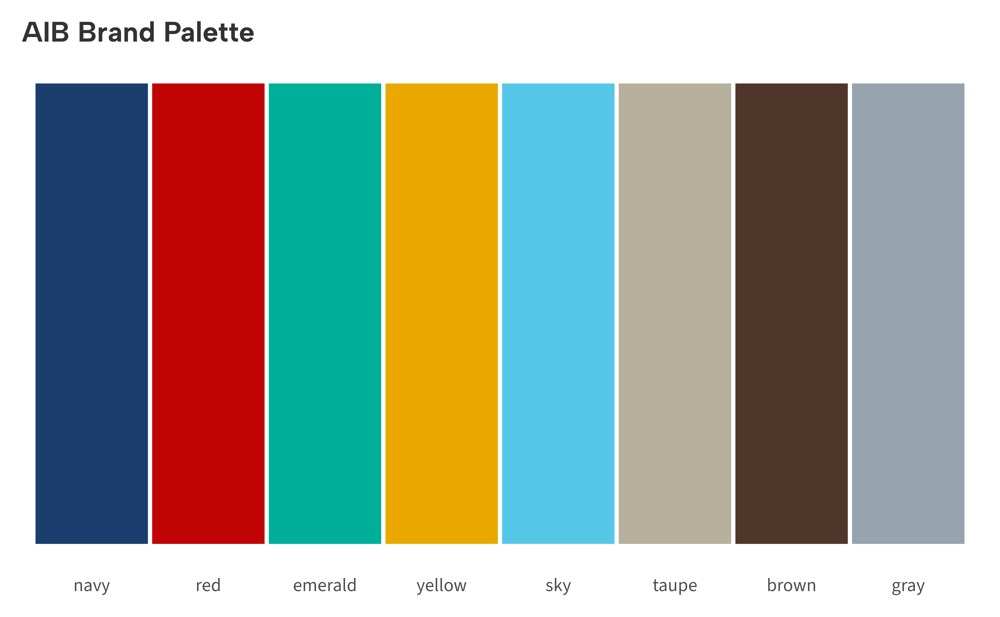
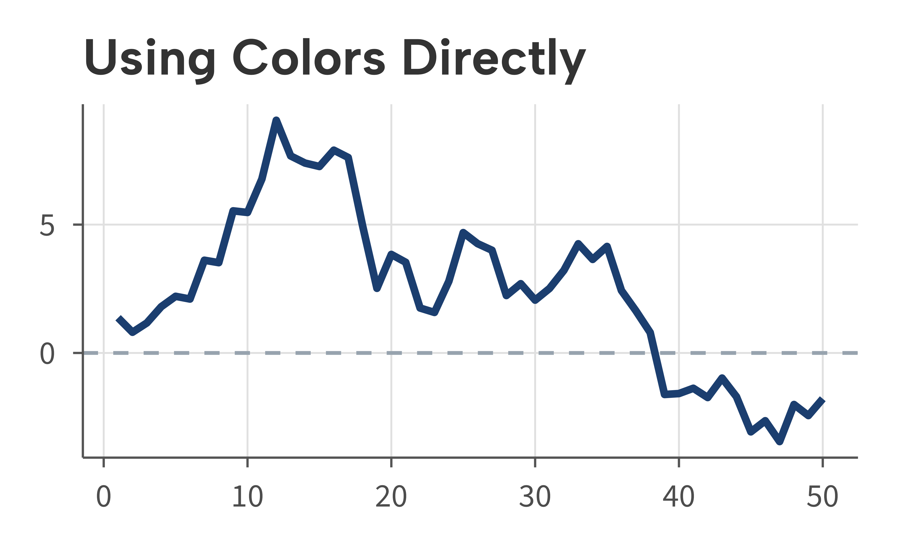

library(ggaib)
#> Brand fonts not found. Using bundled alternatives (Albert Sans, Source Sans 3, Crimson Text).
library(ggplot2)The AIB brand palette contains eight colors. Two functions provide access to these colors for use in custom plots or analyses.
aib_colors() — Access colors by name
Call aib_colors() with no arguments to see the full
palette:
aib_colors()
#> navy red emerald yellow sky taupe brown gray
#> "#1B3E6F" "#C00404" "#00AF9A" "#EBA900" "#55C8E8" "#B6B09D" "#503629" "#97A3AE"Pass color names to select specific values:
aib_colors("navy", "red", "emerald")
#> navy red emerald
#> "#1B3E6F" "#C00404" "#00AF9A"An error is raised for invalid names:
aib_colors("purple")
#> Error:
#> ! purple not valid AIB colors. Choose from: navy, red, emerald, yellow, sky, taupe, brown, grayPalette swatch
cols <- aib_colors()
df <- data.frame(
name = factor(names(cols), levels = names(cols)),
y = 1
)
ggplot(df, aes(name, y, fill = name)) +
geom_tile(color = "white", linewidth = 1) +
scale_fill_manual(values = cols) +
labs(title = "AIB Brand Palette") +
theme_aib() +
theme(
axis.title = element_blank(),
axis.text.y = element_blank(),
axis.ticks = element_blank(),
axis.line = element_blank(),
legend.position = "none"
)
Using colors directly
aib_colors() returns standard hex codes, so the values
can be used anywhere ggplot2 accepts a color string:
set.seed(42)
df <- data.frame(x = 1:50, y = cumsum(rnorm(50)))
ggplot(df, aes(x, y)) +
geom_line(linewidth = 1, color = aib_colors("navy")) +
geom_hline(
yintercept = 0,
linetype = "dashed",
color = aib_colors("gray")
) +
labs(title = "Using Colors Directly", x = NULL, y = NULL) +
theme_aib_grid()
aib_pal() — Palette function for scales
aib_pal() returns a function that generates
n colors from the palette. This is the engine behind
scale_color_aib() and scale_fill_aib(), but it
can also be used on its own:
pal <- aib_pal()
pal(3)
#> [1] "#1B3E6F" "#C00404" "#00AF9A"
pal(5)
#> [1] "#1B3E6F" "#C00404" "#00AF9A" "#EBA900" "#55C8E8"This is useful when you need brand colors outside of a ggplot2 scale, for example when building a custom legend or annotating a plot with colored text.